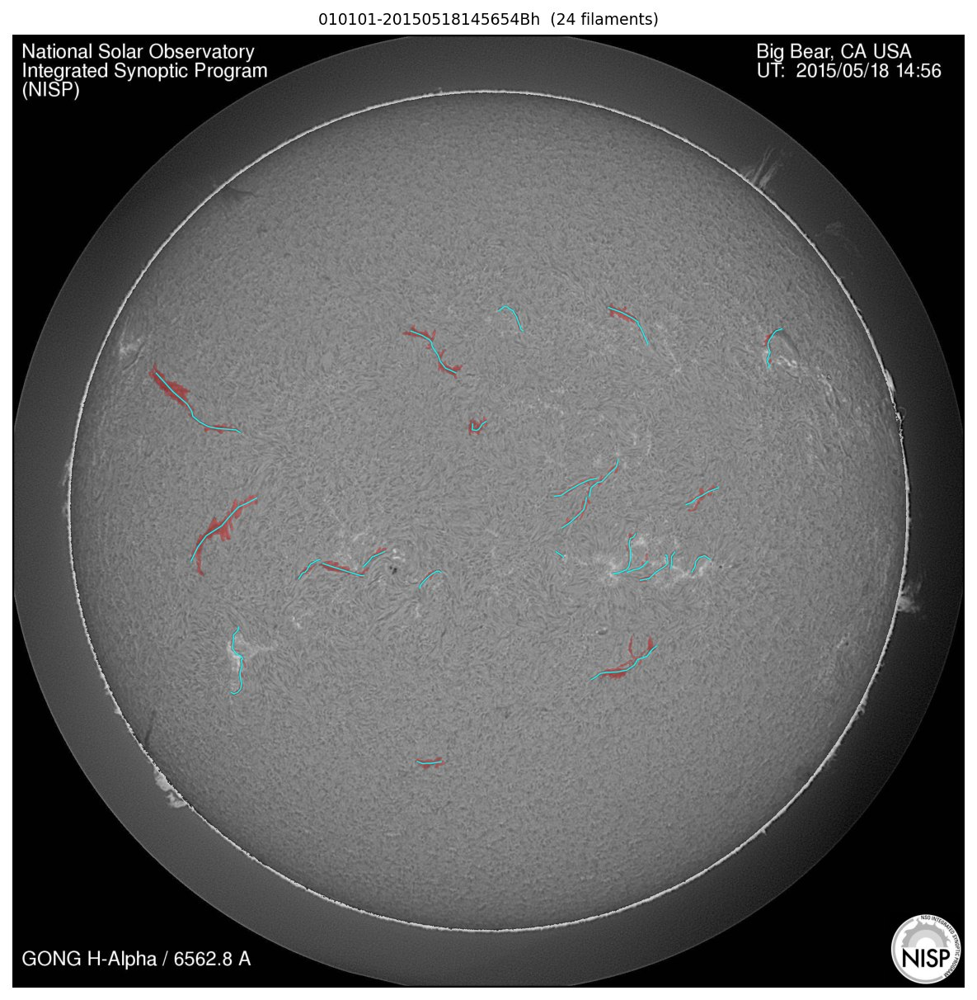
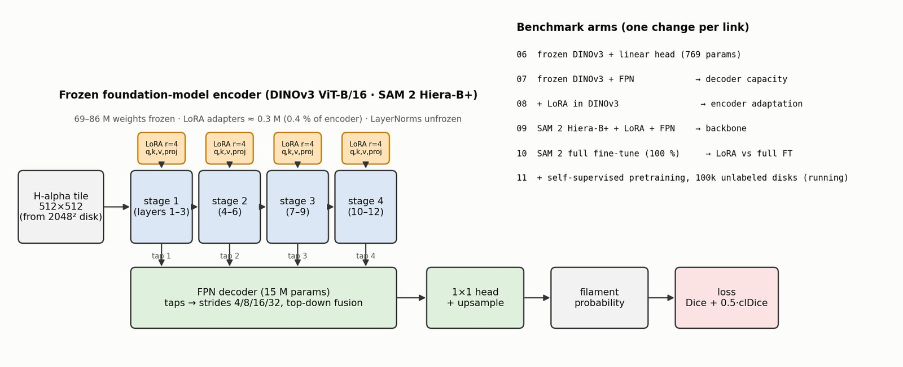
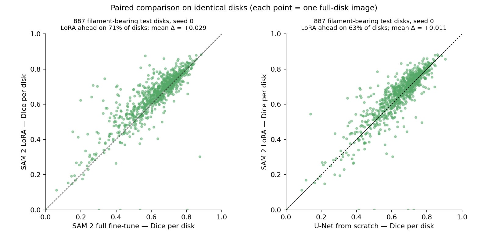
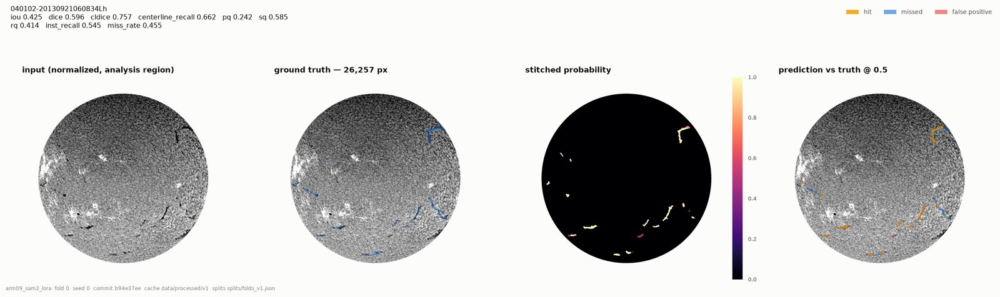
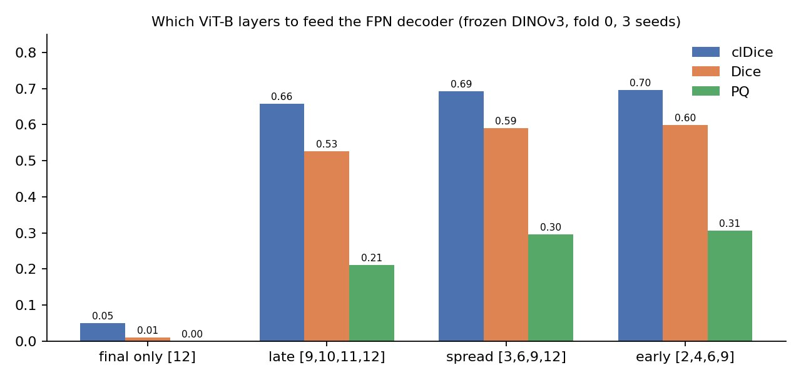
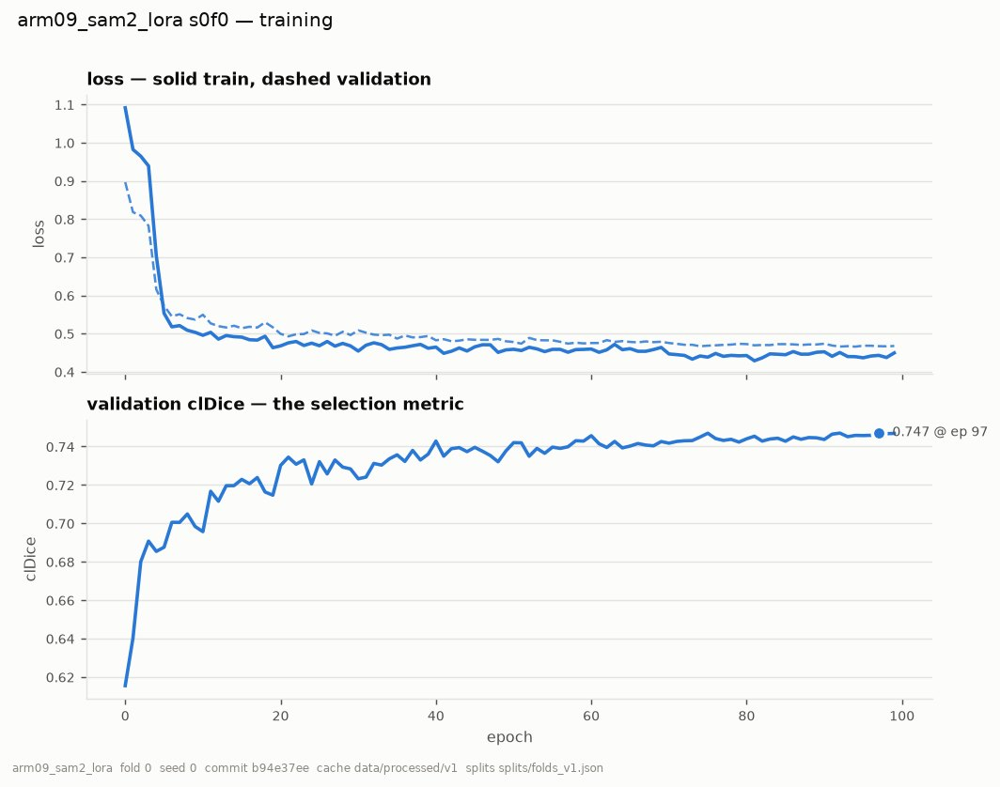
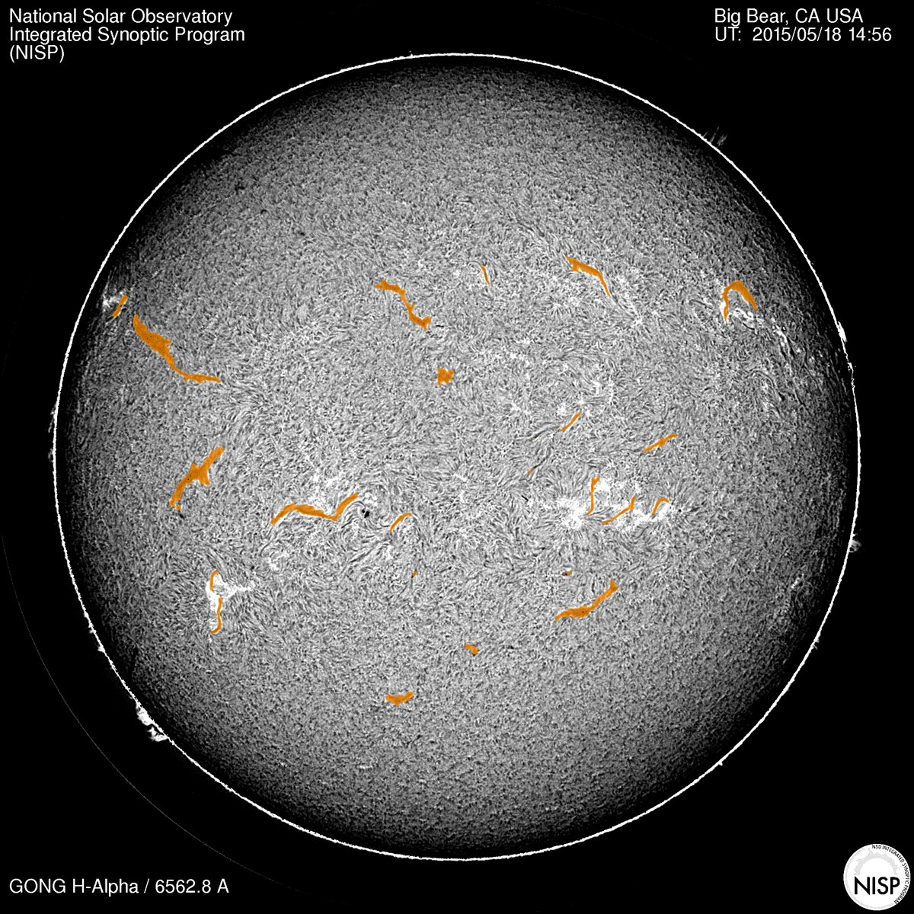

Project · 2026
Solar filament segmentation with foundation models
Can a vision foundation model pretrained on everyday photographs segment thin, faint filaments on the Sun better than a CNN trained from scratch — and how much of the encoder has to change? A controlled benchmark on 958 GONG H-alpha disks.
The problem
Filaments are thin, dark, elongated threads on the solar disk. They cover about 2 % of the pixels, are often broken into fragments, and are annotated by hand — so pixel accuracy is meaningless (~0.98 for everything) and even IoU punishes a one-pixel boundary shift on a five-pixel-wide object.
Data. 958 GONG H-alpha full-disk images (2048 × 2048) with 6,560 filament annotations from the public MAGFiLO dataset; 71 filament-free disks kept as negatives. A frozen 5-fold split — every model sees the same folds.

Metrics, and why. Dice (foreground overlap), clDice (skeleton overlap — does the model draw the spine?), and PQ (panoptic quality — did each filament come out as one object rather than three fragments?). Every number is a mean over test images, averaged over 5 folds, ± std across 3 seeds.
Model design

Every arm on the same split

| model | trainable | encoder trained | Dice | clDice | PQ |
|---|---|---|---|---|---|
| U-Net (scratch) | 31.0 M | — | 0.618 | 0.723 | 0.320 |
| DINOv3 frozen + linear | 769 | 0 % | 0.493 | 0.561 | 0.077 |
| DINOv3 frozen + FPN | 15.0 M | 0 % | 0.613 | 0.710 | 0.293 |
| DINOv3 LoRA r4 + FPN | 15.3 M | 0.39 % | 0.582* | 0.673* | 0.306 |
| SAM 2 LoRA r4 + FPN | 5.4 M | 0.43 % | 0.627 | 0.717 | 0.330 |
| SAM 2 full fine-tune | 73.8 M | 100 % | 0.596 | 0.698 | 0.327 |
* one of 15 DINOv3-LoRA runs collapsed (seed 1 / fold 1); the 14-run mean is Dice 0.60 / clDice 0.70.
- Decoder (linear → FPN): a linear head on frozen DINOv3 features already finds the spines (clDice 0.56) but fragments every object (PQ 0.08). A multi-tap FPN fixes that: +0.15 clDice, PQ ×4. The decoder matters more than the backbone.
- LoRA on DINOv3: small gain on healthy folds (+0.01 clDice, PQ 0.29 → 0.31), one collapsed run.
- Backbone (DINOv3 → SAM 2): the hierarchical encoder is the better fit — its native 4/8/16/32 pyramid suits an FPN and it was pretrained for segmentation. Best arm on Dice, mIoU and PQ.
- LoRA vs full fine-tune: updating all 69 M encoder weights is worse than updating 0.3 M (Dice 0.596 vs 0.627). With ~650 training images, full fine-tuning overfits; LoRA keeps the pretrained features.
The headline: LoRA beats full fine-tuning


What the models actually draw


Ablations


In progress
A masked-image-modelling stage (SimMIM-style, on the SAM 2 Hiera encoder) over 106,871 unlabeled GONG H-alpha frames before the LoRA fine-tune above, evaluated on the same 5 folds so the delta isolates the pretraining. Results will be added when the runs finish.
Try it
A single self-contained script runs the best model on any H-alpha image: limb fit → limb-darkening removal → robust z-score → 512-px tiling with 25 % overlap → SAM 2 Hiera-B+ (LoRA r4) + FPN → averaged stitch → overlay. Verified to reproduce the benchmark's prediction on a held-out disk.
